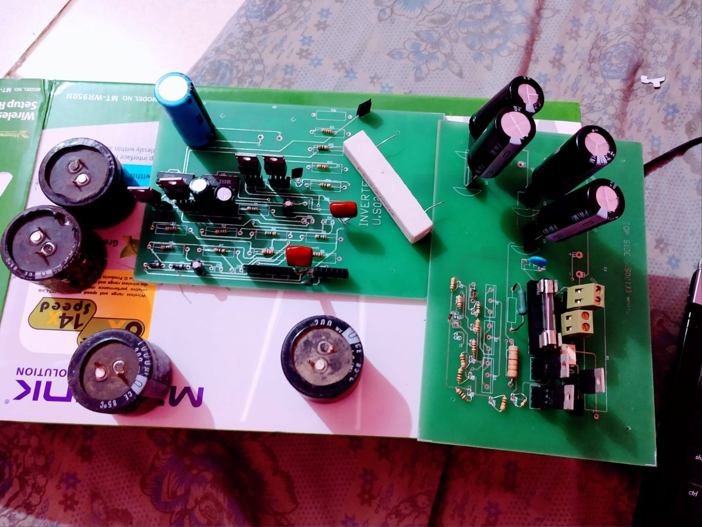
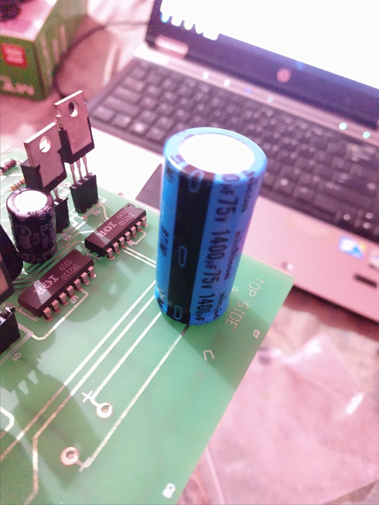
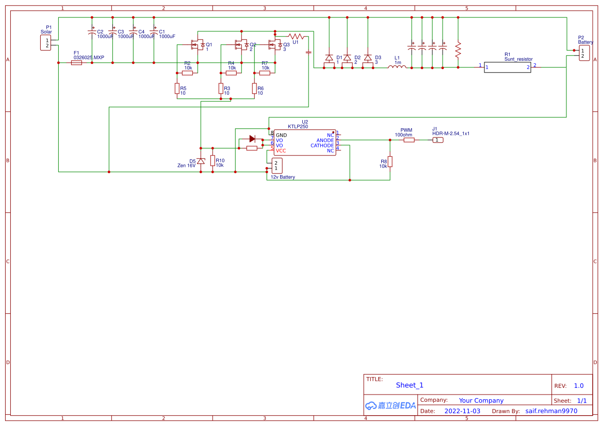
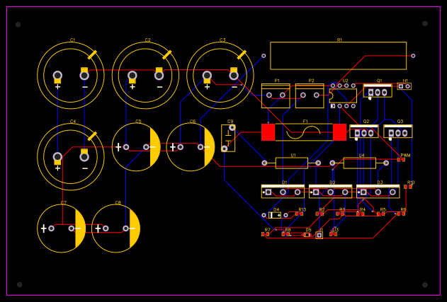
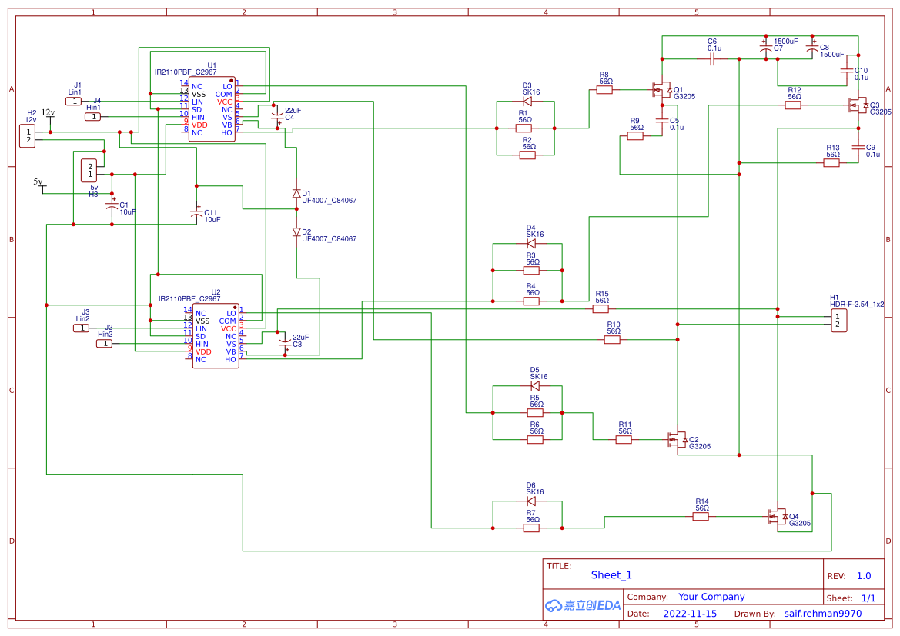
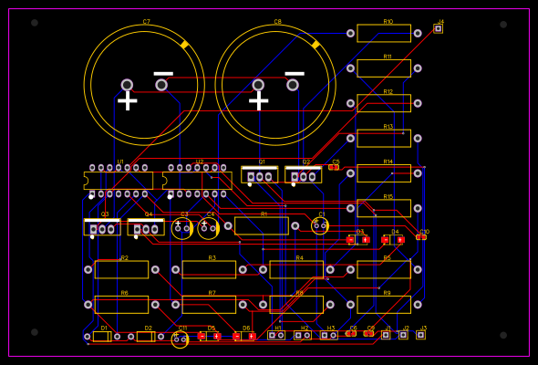
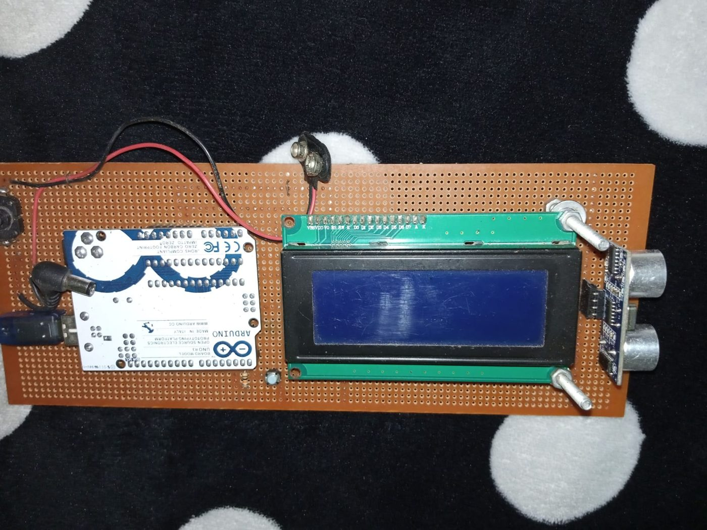

Electrical and Instrumentation Engineer
I am an electrical engineer registered with the Pakistan Engineering Council. My work has covered plant power distribution, solar systems with battery storage, and the drives and controls that run production machines. I have more than four years of experience in automation, instrumentation and solar power, and three published journal papers on renewable energy and automation. I currently lead a shift as E&I Engineer on Krones beverage lines at Gourmet Pakistan.
Perturb and observe MPPT, the algorithm from my senior design project. The dot steps the panel voltage and follows the maximum power point (ring) when irradiance changes. Illustration, not measured data.
My work falls into three areas, and industrial automation sits under all of them. Each publication and project on this page carries the tag of its area. Select an area to highlight its items, or follow the links in each card.
PLC, HMI and SCADA work on beverage, food and pharmaceutical lines (Siemens TIA Portal and WinCC, Allen-Bradley Studio 5000 and FactoryTalk). AS-i Safety commissioning, AS-i and Profibus diagnostics, FAT and SAT, and machine automation projects at Martin Dow and Syngenta.
P&O MPPT algorithm on an ATmega32, built and tested on hardware by the project team. I designed the PCBs in EasyEDA and built the circuit. The work was later published in Spectrum of Engineering Sciences.






An Arduino Uno reads an ultrasonic distance sensor, counts objects that pass in front of it and shows the count on an LCD.

Karachi Institute of Economics and Technology (KIET)
Fazaia Degree College Rafiqui, Shorkot Cantt
| Area | Tools and experience |
|---|---|
| Power distribution | 132 kV and 11 kV HT, 440 V LT, power transformers with on-load tap changer, transformers in parallel, generator sets (Perkins, Caterpillar), transformer FAT and SAT (as a participant) |
| Drives and motors | Servo drives (Allen-Bradley, Siemens, ABB), VFDs (Danfoss, Delta, Allen-Bradley), star-delta, DOL and soft starters, motor protection relays |
| PLC, HMI, SCADA | Siemens STEP 7 and TIA Portal, WinCC, Allen-Bradley Studio 5000, FactoryTalk, Wonderware InTouch, EcoStruxure Machine, Delta WPLSoft and DOPSoft |
| Industrial communication | AS-i, Profibus, Modbus, HART, DNP3, RS-485, CANopen, MQTT |
| Renewable energy and storage | PV system design and maintenance, PVsyst, HelioScope, lithium-ion and VRLA batteries, rectifiers, diesel gensets |
| Simulation and electronics | MATLAB/Simulink, LabVIEW, Proteus, Altium, EasyEDA, LTspice, NI Multisim |
| CAD and planning | AutoCAD 2D and 3D, SolidWorks, Primavera P6 |
| Programming | C, C++, Python and Arduino (beginner level), assembly on a PIC18 microcontroller |
| Languages | Urdu and Punjabi (native), English (IELTS 6.0 in 2026, degree taught in English), German (A1) |